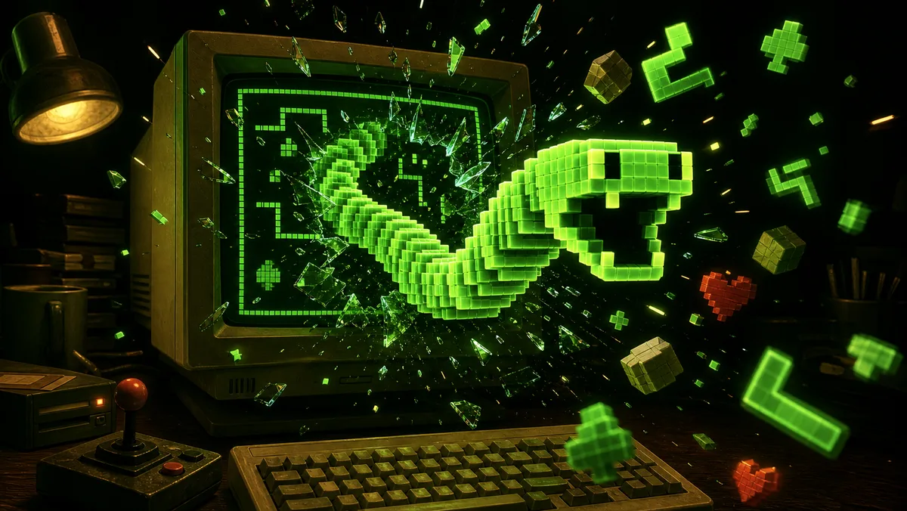

Гра 1988 року
Текстова гра MS-DOS з 1988 року — відроджена у браузері
Керуйте змійкою стрілками · <ESC> = здатися, якщо застрягли
F9 = додаткове життя · F10 = пропустити рівень · будь-яка клавіша продовжує
Проведіть, щоб керувати · торкання = будь-яка клавіша
